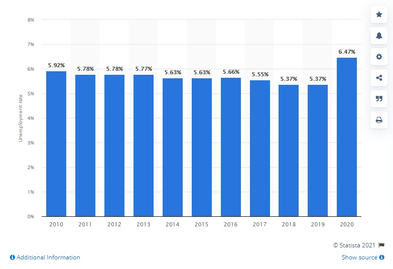

|
Estatísticas
|
|
|
Ao redor do mundo milhões de pessoas não possuem um emprego digno; alguns desempregados,
outros sofrendo com a escravidão moderna. Com a crise global gerada pela pandemia, o
número de desempregados que em 2019 era de 187 milhões, cresceu para 220 milhões em
2021, esse aumento no número de desempregados reflete diretamente o cenário econômico
dos países. No Brasil por exemplo, a estimativa mais recente de analistas consultados
pelo Banco Central é que o PIB (Produto Interno Bruto) tenha encolhido 4,3% no ano
passado.
Entretanto, se desconsiderarmos o momento atípico da pandemia, o nível de desemprego
estava diminuindo a cada ano

O gráfico acima mostra a porcentagem de desemprego no mundo. No geral, o índice estava
diminuindo gradativamente, o que indica uma evolução no objetivo da agenda 2030
Além do desemprego, muitos sofrem com a escravidão moderna, que consiste em pessoas sendo forçadas a trabalhar sob ameaças ou quando o trabalhador recebe uma quantia insuficiente para suas necessidades, em condições ilegais. 71% das vítimas são mulheres e 62% dos casos acontecem na asia.
|
|
|